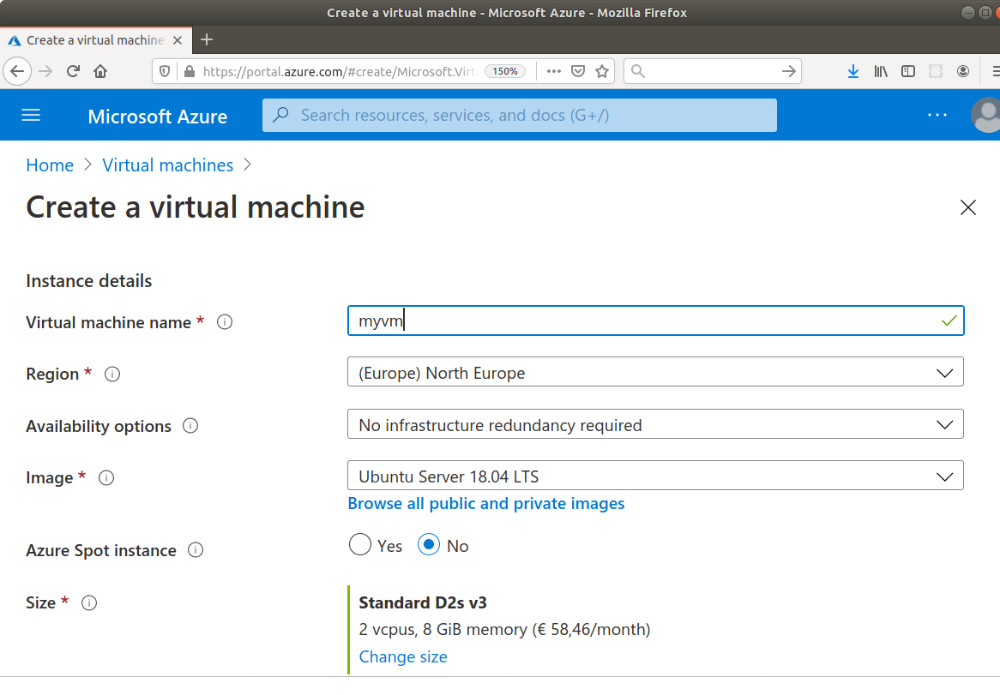

15 Scaling up and distributing
Abstract. Throughout this book, we have been working with examples that consist of code to conduct one specific analysis of data sets of modest size. But at some point, you may want to scale up. You may want others to be able to apply your code to their data; and you may want to be able to also use your own analyses on larger and more complex datasets. Or you may need to run analyses that your own computer cannot deal with. This chapter deals with such steps and points you to some techniques that become increasingly useful the larger your projects get.
Keywords. databases, cloud computing, containerization, source code, version control
Objectives:
- Be able to scale up your analyses
- Know when to use databases
- Know when to use cloud computing
- Know about distributing source code and containers.
15.1 Storing Data in SQL and noSQL Databases
15.1.1 When to Use a Database
In this book, we have so far stored our data in files. In fact, before covering the wide range of methods for computational analysis, we discussed some basics of file handling (Chapter 5). Probably, you did not experience any major trouble here (apart from occasional struggles with non-standard encodings, or confusion about the delimiters in a csv file). On the other hand, the examples we used were still modest in size: usually, you were dealing with a handful of csv files; except for huge image classification datasets, the maximum you had to deal with were the 50000 text files from the IMDB movie review dataset.
In particular, when loading your data into a data frame, you copied all the data from your disk into memory1. But what if you want to scale up your analyses a bit Trilling and Jonkman (2018)? Maybe we want to build up a larger data collection, maybe even share it with multiple team members, search and filter our data, or collect it over a larger timespan? An example may illustrate the problems that can arise.
Imagine you do some web scraping (Chapter 12) that goes beyond a few thousand texts. Maybe you want to visit relevant news sites on a regular basis (say, once an hour) and retrieve everything that’s new. How do you store your data then? You could append everything to a huge csv file, but this file would quickly grow so large that you cannot load it into memory any more. Besides, you may run the risk of corrupting the file if something goes wrong in one of your attempts to extend the file. Or you could also write each article to a new, separate file. That’s maybe more failsafe, but you would need to design a good way to organize the data. In particular, devising a method to search and find relevant files would be a whole project in itself.
Luckily, you can outsource all these problems to a database that you can install on your own computer or possibly on a server (in that case, make sure that it is properly secured!). In the example, the scraper, which is running once an hour, just sends the scraped data to the database instead of to a file, and the database will take care of storing it. Once you want to retrieve a subset of your articles for analysis, you can send a query to the database and read from it. Both Python and R offer integration for multiple commonly used databases. It is even possible to directly get the results of such a database query in the form of a data frame.
We can distinguish two main categories of databases that are most relevant to us (see also Günther, Trilling, and van de Velde 2018): relational databases (or SQL-databases) and noSQL-databases. Strictly speaking, SQL (“structured query language”) is a query language for databases, but it is so widespread that it is used almost synonymously for relational databases. Even though they have already been around for 50 years (Codd 1970), relational databases are still very powerful and very widely used. They consist of multiple tables that are linked by shared columns (keys). For instance, you could imagine a table with the orders placed in a webshop that has a column customer-id, and a different table with addresses, billing information, and names for each customer-id. Using filter and join operations (like in Chapter 6, but then on the database directly), one can then easily retrieve information on where the order has to be shipped. A big advantage of such a relational database is that, if a customer places 100 orders, we do not need to store their address 100 times, but only once, which is not only more efficient in terms of storage, but also prevents inconsistencies in the data.
In contrast to SQL databases, noSQL databases are not based on tables, but use concepts such as “documents” or key-value pairs, very much like Python dictionaries or JSON files. These types of databases are particularly interesting when your data are less well-structured. If not all of your cases have the same variables, or if the content is not well-defined (let’s say, you don’t know exactly in what format the date of publication on a news site will be written), or if the data structure may change over time, then it is hard or impossible to come up with a good table structure for an SQL database. Therefore, in many “big data” contexts, noSQL databases are used, as they – depending on your configuration – will happily accept almost any kind of content you dump in them. This comes, of course, at the expense of giving up advantages of SQL databases, such as the avoidance of inconsistencies. But often, you may want to store your data first and clean up later, rather than risking that data collection fails because you enforced a too strict structure. Also, there are many noSQL databases that are very fast in searching full text – something that SQL databases, in general, are not optimized for.
Despite all of these differences, both SQL and noSQL databases can play the same role in the computational analysis of communication. They both help you to focus on data collection and data analysis without needing to devise an ingenious way to store your data. They both allow for much more efficient searching and filtering than you could design on your own. All of this becomes especially interesting when your dataset grows too large to fit in memory, but also when your data are continuously changed, for instance because new data are added while scraping.
15.1.2 Choosing the Right Database
Choosing the right database is not always easy, and has many consequences for the way you may conduct your analyses. As Günther, Trilling, and van de Velde (2018) explain, this is not a purely technical choice, but impacts your social-scientific workflow. Do you want to enforce a specific structure from the very start, or do you want to collect everything first and clean up later? What is your trade-off between avoiding any inconsistency and risking throwing away too much raw information?
Acknowledging that there are often many different valid choices, and at the risk of oversimplifying matters, we will try to give some guidance in which databases to choose by offering some guiding questions.
How is your data structured?. Ask yourself: can I organize my data in a set of relational tables? For instance, think of television viewing data: there may be a table that gives information on when the television set was switched on and which channel was watched and by which user id. A second table can be used to associate personal characteristics such as age and gender with the user id. And a third table may be used to map the time stamps to details about a specific program aired at the time. If your data looks like this, ask yourself: can I determine the columns and the data types for each column in advance? If so, then a SQL database such as MySQL, PostgreSQL, or MariaDB is probably what you are looking for. If, on the other hand, you cannot determine such a structure a priori, if you believe that the structure of your information will change over time, or if it is very messy, then you may need a more flexible noSQL approach, such as MongoDB or ElasticSearch.
How important is full-text searching for you?. SQL databases can handle numeric datatypes as well as text datatypes, but they are usually not optimized for the latter. They handle short strings (such as usernames, addresses, and so on) just fine, but if you are interested in full-text searching, they are not the right tool for the job. This is in particular true if you want to be able to do fuzzy searches where, for instance, documents containing the plural of a word that you searched for as singular are also found. Databases of, for instance, news articles, tweets, transcripts of speeches, or other documents are much better accessed in a database such as ElasticSearch.
How flexible does it need to be?. In relational databases, it is relatively hard to change the structure afterwards. In contrast, a noSQL database has no problem whatsoever with adding a new document that contains keys that did not exist before. There is no assumption that all documents contain the same keys. Therefore, if it is hard to tell in advance which “columns” or “keys” may represent your data best, you should stay clear of SQL databases. In particular, if you think of gradually extending your data and use it on a long timeline for re-use, potentially even by multiple teams, the flexibility of a noSQL database may be a game changer.
15.1.3 A Brief Example Using SQLite
Installing a database server such as mysql, mariadb (an open-source fork of mysql), MongoDB, or Elasticsearch is not really difficult (in fact, it may already be come pre-packaged with your operating system), but the exact configuration and setup may differ widely depending on your computer and your needs. Most importantly, especially if you store sensitive data in your database, you will need to think about authentication, roles, etc. — all beyond the scope of this book.
Luckily, there is a compromise between storing your data in the files that you need to manage yourself and setting up a database server, locally or remotely. The library SQlite offers a self-contained database engine – essentially, it allows you to store a whole database in one file and interact with it using the SQL query language. Both R and Python offer multiple ways of directly interacting with sqlite files (Example 15.1). This gives you access to some great functionality straight away: after all, you can issue (almost) any SQL command now, including (and maybe most importantly) commands for filtering, joining, and aggregating data. Or you could consider immediately writing each datapoint you get from an API or a webscraper (Chapter 12) without risking losing any data if connections time out or scraping fails halfway.
Of course, SQlite cannot give you the same performance as a “real” mysql (or similar) installation could offer. Therefore, if your project grows bigger, or if you have a lot of read- or write-operations per second, then you may have to switch at some point. But as you can see in Example 15.1, Python and R do not really care about the back end: all you need to do is to change the connection conn such that it points to your new database instead of the sqlite file.
15.2 Using Cloud Computing
Throughout this book, we assumed that all tasks can actually be performed on your own computer. And often, that is indeed the best thing to do: you normally want to maintain a local copy of your data anyway, and it may be the safest bet for ethical and legal reasons – when working with sensitive data, you need to know what you are doing before transferring them somewhere else.
However, once you scale up your project, problems may arise (see Trilling and Jonkman (2018)): - Multiple people need to work on the same data - Your dataset is too large to fit on your disk - You do not have enough RAM or processing power - Running a process simply takes too long (e.g., training a model for several days) or needs to be run in continuous intervals (e.g., scraping news articles once an hour) and you need your computer for other things.
This is the point where you need to start moving your project to some remote server instead. Broadly speaking, we can consider four scenarios: - A cloud service that just lets you run code. Here, you can just submit your code and have it run. You do not have full control, you cannot set up your own system, but you also do not have to do any administration. - A dedicated server. You (or your university) could buy a dedicated, physical server to run computational social science analyses. On the bright side, this gives you full control, but it is also not very flexible: after all, you make a larger investment once, and if it turns out that you need more (or less) resources, then it might be too late to change. - A virtual machine (VM) on a cloud computing platform. For most practical purposes, you can do the same as in the previous option, with the crucial difference that you rent the resources. If you need more, you just rent more; and when you are done, you just stop the machine. - A set of machines to run complex tasks using parallel computing. With large amounts of information (think about image or video data) and sophisticated modeling (such as deep learning) you may need to distribute the computation among several different computers at the same time.
An example for the first option is Google Colab. While it makes it easy to share and run notebooks, the free tier we used so far does not necessarily solve any of the scalability issues discussed. However, Google Colab also has a paid Pro version, in which additional hardware (such as GPUs, TPUs or extra memory) that you may not have on your own computer can be used. This makes it an attractive solution for enabling projects (e.g., involving resource-intensive neural networks) that otherwise would not be possible.
However, this is often not enough. For instance, you may want to run a database (Section 15.1) or define a so-called cron job, which runs a specific script (e.g., a web scraper) at defined intervals. Here, options 2 and 3 come into play – most realistically for most beginners, option 3.
There are different providers for setting up VMs in the cloud, the most well-known probably being Amazon Web Services (AWS) and Microsoft Azure. Some universities or (national) research infrastructure providers provide high-performance computing in the cloud as well. While the specific way to set up a virtual machine of your own on such an infrastructure varies, the processes are roughly similar: you select the technical specifications such as the number of CPU cores and the amount of memory you need, attach some storage, and select a disk image with an operating system, virtually always some Linux distribution (Figure 15.1, Figure 15.2). After a couple of minutes, your machine is ready to use.


While setting up such a machine is easy, some knowledge is required for the responsible and safe administration of the machine, in particular to prevent unauthorized access.
Imagine you have a script myscript.py that takes a couple of days to run. You can then use the tool scp to copy it to your new virtual machine, log on to your virtual machine using ssh, and then – now on your virtual machine! – run the script using a tool such as nohup or screen that will start your script and will keep running it (Figure 15.3). You can safely logout again, and your virtual machine in the cloud will keep on doing its work. The only thing you need to do is collect your results once your script is done, even if that’s a couple of weeks later. Or you may want to add your script to the crontab (Google it!), which will automatically run it at set intervals.

You may want to have some extra luxury, though. Popular things to set up are databases (Section 15.1) and JupyterHub, which allows users such as your colleagues to connect through their web browser with your server and run their own Jupyter Notebooks on the machine. Do not forget to properly encrypt all connections, for instance using letsencrypt.
Finally, option 4 must be selected when the scale of your data and the complexity of the tasks cannot be deployed in a single server or virtual machine. For example, building a classification model by training a complex and deep convolutional neural network with millions of images and update this model constantly may require the use of different computers at the same time. Actually, in modern computers with multiple cores or processors you normally run parallel computing within a single machine. But when working at scale you will probably need to set a infrastructure of different computers such as that of a grid or a cluster.
Cloud services (e.g. AWS, Microsoft Azure, etc.) or scientific infrastructures (e.g. supercomputers) offer the possibility to set these architectures remotely. For instance, in a computer cluster you can configure a group of virtual computers, where one will act as a main and the others as workers. With this logic the main can distribute the storage and analysis of data among the slaves and then resume the results: see for example the MapReduce or the Resilient Distributed Dataset (RDD) approaches used by the open-source software Apache Hadoop and Apache Spark respectively. For a specific example of parallel computing in computational analysis of communication you can take a look at the implementation of distributed supervised sentiment analysis, in which one of the authors of this book deployed supervised text classification in Apache Spark and connected this infrastructure with real-time analysis of tweets using Apache Kafka in order to perform streaming analytics@calderon2019distributed.
These architectures for parallel processing will significantly increase your computation capacity for big data problems but the initial implementation will consume time and (most of the time) money, which is the reason why you must think in advance if there is a simpler solution (such as a single but powerful machine) before implementing a more complex infrastructure in your analysis.
15.3 Publishing Your Source
Already in Section 4.3, we briefly introduced the idea of version control protocols such as git, and the most well-known online git repository GitHub. There are others, such as Bitbucket and the question of which one you use is not really of importance for our argument here. Already for small projects, it is a good idea to use version control so that you can always go back to earlier versions, but as soon as you start working with multiple people on one project, it becomes indispensable.
In particular, it is possible to work on multiple branches, different versions of the code that can later be merged again. In this way, it is possible to develop new features without interfering with the main version of the code. There are plenty of git tutorials available online, and we highly recommended using git from the beginning of a specific project on – be it your bachelor, master or doctoral thesis, a paper, or a tool that you want to create.
In the computational analysis of communication, it is becoming more and more the norm to publish all your source code together with an article, even though it is important to keep in mind ethical and legal restrictions (Van Atteveldt et al. (2019)). Using a version control platform like GitHub from the beginning makes this easy: when publishing your paper, the only thing you have to do is to set access of your repository to “public” (in case it was private before), add a README.md file (in case you have not done so earlier), and preferably, get a persistent identifier, a doi for your code (see guides.github.com/activities/citable-code/). And don’t forget to add a license to your code, such as MIT, GPL, or Apache. All of these have specific implications on what others can or cannot do with your code (e.g., whether it can be used for commercial purposes or whether derivatives need to be published under the same license as well). Whatever you choose here, it is important that you make a choice, as otherwise, it may not be (legally) possible to use your code at all. If your code pertains to a specific paper, then we suggest you organize your repository as a so-called “research compendium”, integrating both your code and your data. Van Atteveldt et al. (2020) provide a template and tools for easily creating one 2.
In virtually all instances, your code will rely on libraries written by others, which are available free of charge. Therefore, it only seems fair to “give back” and make sure that any code that you wrote and that can be useful to others, is also available to them.
Just like in the case of a research compendium for a specific paper, publishing source code for more generic reuse also begins with a GitHub repository. In fact, both R (with devtools) and Python (via pip) can install packages directly from GitHub. In order to make sure that your code can be installed as a package, you need to follow specific instructions on how to name files, how to structure your directory, and so on (see packaging.python.org/tutorials/packaging-projects/ and r-pkgs.had.co.nz/).
Regardless of these specific technical instructions, you can make sure from the outset, though, that your code is easily re-usable. The checklist below can help making your code publishable from the outset.
- Do not hard-code values. Rather than using
"myoutputfile.csv"or50within your script, create constants likeOUTPUTFILE="myoutputfile"andNUMBER_OF_TOPICS=50at the beginning of your script and use these variables instead of the values later on. Even better, let the user provide these arguments as command line arguments or via a configuration file. - Use functions. Rather than writing large scripts that are executed from the first line to the last in that order, structure the code in different functions that fulfill one specific task each, and can hence be reused. If you find yourself copy-pasting code, then most likely, you can write a function instead.
- Document your code. Use docstrings (Python) or comments (R) to make clear what each function does.
15.4 Distributing Your Software as Container
When publishing your software, you can think of multiple user groups. Some may be interested in building on and further developing your code. Some may not care about your code at all and just want your software to run. And many others will be somewhere in between.
Only publishing your source code (Section 15.3) may be a burden for those who want your code to “just run” once your code becomes more complex and has more dependencies. Imagine a scenario where your software requires a specific version of Python or R and/or some very specific (or maybe incompatible) libraries that you do not want to force the user to install.
And maybe your prospective user does not even know any R or Python.
For such cases, so-called containers are the solution, with as most prominent platform Docker. You can envision a container as a minimalistic virtual machine that includes everything to run your software. To the outside, none of that is visible – just a network port to connect to, or a command line to interact with, depending on your choices.
Software that is containerized using Docker is distributed as a so-called Docker image. You can build such an image yourself, but it can also be distributed by pushing it to a so-called registry, such as the Docker Hub. If you publish your software this way, the end user has to do nothing other than installing Docker and running the command docker run nameofyourimage – it will even be downloaded automatically if necessary. There are also GUI versions of Docker available, which lowers the threshold for some end user groups even more.
Let’s illustrate the typical workflow with a toy example. Imagine you wrote the following script, myscript.py:
import numpy as np
from random import randint
a = randint(0,10)
print(f"exp({a}) = {np.exp(a)}")You think that this is an awesome program (after all, it calculates \(e\) to the power of a random integer!), and others should be able to use it. And you don’t want to bother them with setting up Python, installing numpy, and then running the script. In fact, they do not even need to know that it’s a Python program. You could have written it as well in R, or any other language – for the user, that will make no difference at all.
What would a Docker image that runs this code need to contain? Not much: first some basic operating system (usually, a tiny Linux distribution), Python, numpy, and the script itself.
To create such a Docker image, you create a file named Dockerfile in the same directory as your script with the following content:
FROM python:3
ADD myscript.py /
RUN pip install numpy
CMD [ "python", "./myscript.py" ]The first line tells Docker to build your new image by starting from an existing image that already contains an operating system and Python3. You could also start from scratch here, but this makes your life much easier. The next line adds your script to the image, and then we run pip install numpy within the image. The last line just specifies which command with which parameters needs to be executed when the image is run – in our case python ./myscript.py.
To create the image, you run docker build -t dockertest . (naming the image “dockertest”). After that, you can run it using docker run dockertest – and, if you want to, publish it.
Easy, right?
But when does it make sense to use Docker? Not in our toy example, of course. While the original code is only a couple of bytes, it now got bloated to hundreds of megabytes. But there are plenty of scenarios where this makes a lot of sense.
- To “abstract away” the inner workings of your code. Rather than giving potentially complicated instructions how to run your code, which dependencies to install, etc., you can just provide users with the Docker image, in which everything is already taken care of.
- To ensure that users get the same results. Though it doesn’t form a huge problem on a daily basis for most computational scientists, different versions of different libraries on different systems may occasionally produce slightly different results. The container ensures that the code is run using the same software setup.
- To avoid interfering with existing installations. Already our toy example had a dependency, numpy, but often, dependencies can be more complex and a program we write may need very specific libraries, or even some other software beyond Python or R libraries. Distributing the source code alone means forcing the user to also install these; and there are many good reasons why people may be reluctant to do so. It may be incompatible with other software on their computer, there may be security concerns, or it just may be too much work. But if it runs inside of the Docker container, many of these problems disappear.
In short, the Docker image is rarely the only way in which you distribute your source code. But already adding a Dockerfile to your GitHub repository so that users can build a Docker container can offer another and maybe better way of running your software to your audience.